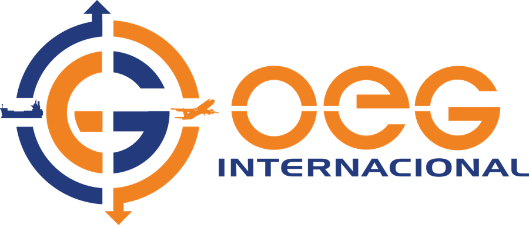

01 / Freight forwarding y NVOCC · EE. UU. y Venezuela
OEG Internacional
Transporte internacional, transporte terrestre, almacenamiento y distribución en Estados Unidos y Venezuela. OEG Internacional coordina el recorrido desde la recogida de la carga hasta la entrega final.
- Transporte marítimo y aéreo, FCL/LCL y coordinación de fletamentos
- Transporte terrestre, recogida y entrega final en Venezuela y Estados Unidos
- Almacenamiento, consolidación, preparación y distribución
- Carga de proyectos y logística multimodal internacional
- Coordinación de proveedores, procura y preparación de embarques